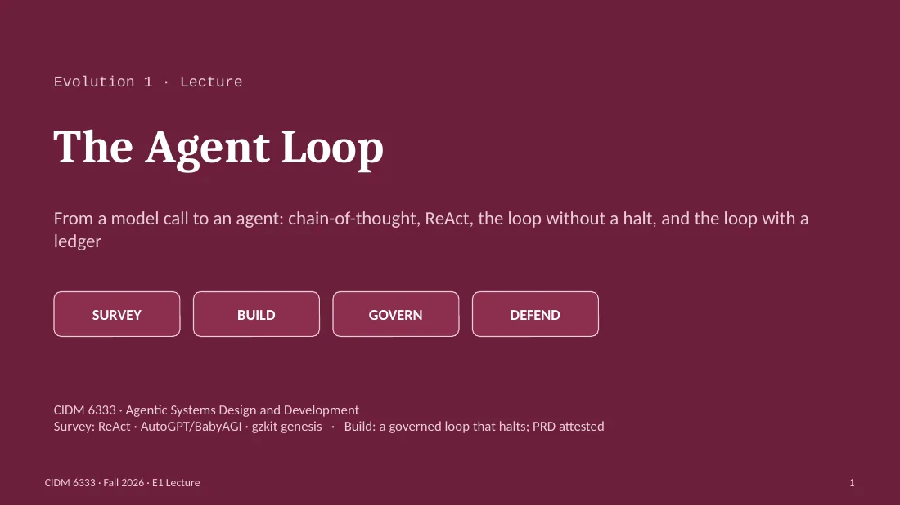

From a model call to an agent: chain-of-thought, ReAct, the loop without a halt, and the loop with a ledger
Textbook: Chapter 5 (survey) · Chapter 10 (build) · Chapter 25 (method) · Glossary

Evolution 1. Last week you had maps and a posture. Tonight you get the atom: the loop. Everything from here to December decorates this loop with tools, memory, coordination, and evaluation, so it is worth an hour to get it exactly right. The framing sentence for the week: a loop without a halt is a bill. Survey systems are ReAct, then AutoGPT and BabyAGI, then the reference design's genesis. Build: a governed loop that halts, with a PRD attested. [0:00–0:01]
Arrow keys step through the slides. The panel above is the lecture written out for the slide on screen; Read this lecture below has all of it in order, with each slide's full wording. Names and systems that appear without introduction are in the glossary.
The speaker notes, slide by slide: what the lecture says about each slide, then the slide's own wording. Click a slide image to open it in the viewer above.